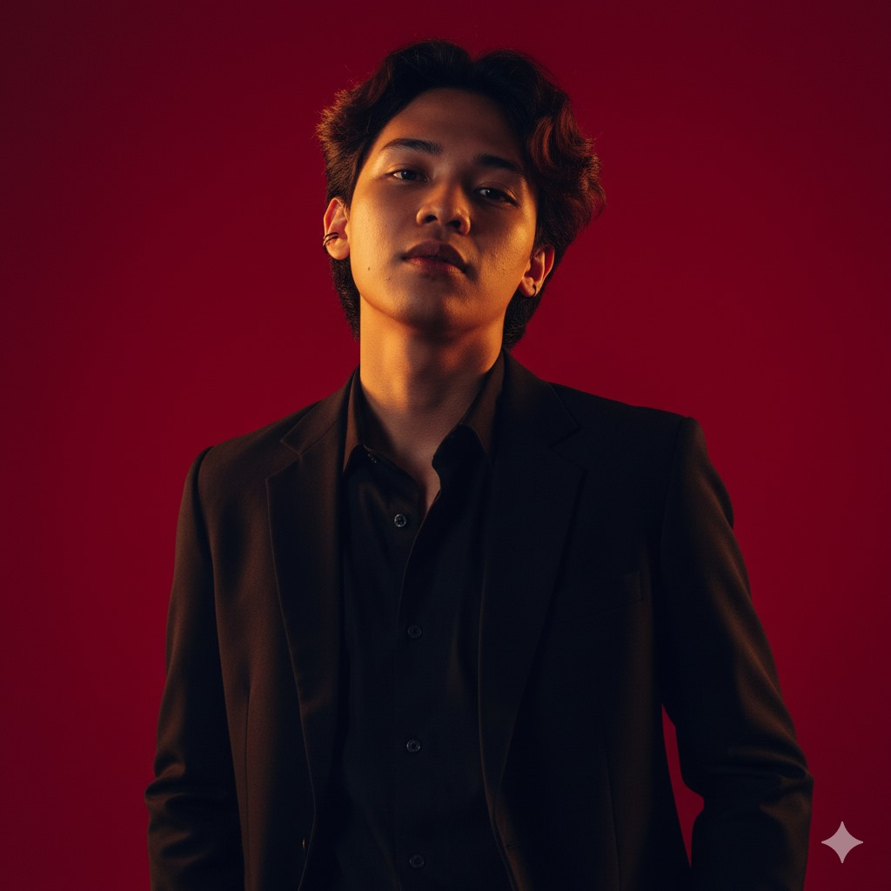

Meet myself.
I'm Aidil Azani — a computer science student at UiTM Shah Alam and a frontend developer. I've chosen this path not knowing it would burn my brain and soul, yet I'm still standing here, pursuing what my heart never craved for.
I care about interfaces that feel calm and intentional — clean type, honest spacing, and motion that earns its place. When I'm not coding, I'm usually behind a camera collecting the moments you'll find on my Memory page.
Where I've been.
-
Currently
UiTM Shah Alam
Computer Science Student
Pursuing a degree in computer science — coursework spanning data science, machine learning and software engineering.
-
2023 – 2024
JustSimple Sdn. Bhd
Frontend Developer
Built and maintained client websites — translating designs into responsive, polished frontends with WordPress, Elementor and custom code.
-
2022 – 2023
Freelance
Junior Developer
First steps into professional work — small client projects that taught me how shipped code differs from classroom code.
Tools & technologies.
Want to work together?
I'm open to internships, freelance projects and good conversations.
Get in touch